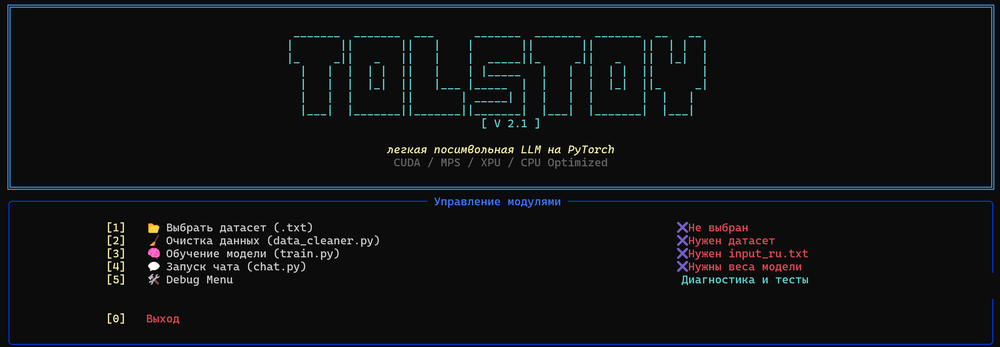

Новое поколение посимвольных языковых моделей для глубокого лингвистического анализа и имитации классического стиля.
Легковесная архитектура Transformer, оптимизированная для инференса на потребительском железе.
Продвинутая система семантического сбора промптов для воссоздания сложного синтаксиса.
Встроенный инструментарий для оценки TTR, когерентности и семантических связей.
Модульная структура Tolstoy v2.1 обеспечивает бесшовную интеграцию между ядром обучения (Engine) и интерфейсными модулями (CLI/TUI).
